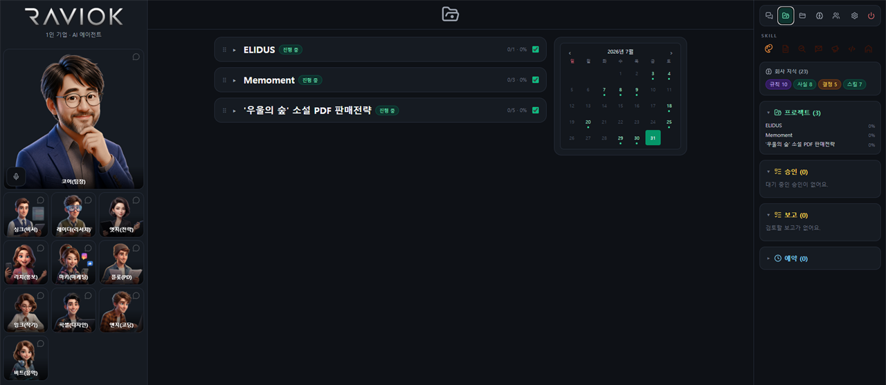

코어
총괄 — 작업 분해·라우팅·최종 판단
기획·글·이미지·영상·사운드 제작부터 6개 SNS 배포와 성과 분석까지. 지시만 하면 담당 AI 직원이 실행하고, 배포·삭제 같은 되돌릴 수 없는 일은 당신 승인 뒤에만 움직입니다.

총괄 에이전트 '코어'가 요청을 쪼개 담당자에게 넘깁니다. 각 직원은 자기 직무의 실제 도구를 들고 실행합니다.
총괄 — 작업 분해·라우팅·최종 판단
전략·비즈니스 — 수익모델·가격·KPI
리서치 — 트렌드·경쟁사·사실확인
마케팅·그로스 — 캠페인·퍼널
콘텐츠 디렉터 — 기획·포맷·후크
작가·카피 — 스크립트·캡션·문서
디자인 — 브랜드·비주얼·영상
사운드 — BGM·효과음·더빙
엔지니어 — 코드·자동화·API
채널·배포 — 전 채널 발행·해시태그·SEO
PM·비서 — 일정·할일·요약·보고
게시·삭제·발송처럼 되돌릴 수 없는 일은 실행 전에 승인 카드로 올라옵니다.
마이크를 켜고 말하면 그대로 업무가 됩니다. 답변도 음성으로 돌아옵니다.
직원이 만든 산출물은 폴더로 정리되고, 프로젝트에 그대로 연결됩니다.
아이디어가 게시물이 되기까지, 도구를 바꾸지 않아도 됩니다.
주제·브랜드만 주면 스토리 비트와 숏 단위 시나리오로 분해합니다.
글·이미지·영상·사운드를 한 자리에서 만듭니다. 장면마다 필요한 소재를 즉시.
씬을 배열하고 나레이션·음악·효과음을 입힌 뒤 최종본까지 렌더·다운로드합니다.
채널별 캡션·해시태그를 정리해 6개 SNS에 한 번에 게시합니다.
조회수·반응을 자동으로 모아 브랜드·에피소드 단위로 보여주고, 다음에 뭘 바꿀지 제안합니다.
각 단계는 검증된 최신 생성 모델로 구동됩니다.
장르·톤·길이에 맞춰 비트와 숏으로 자동 구조화합니다.
SNS 카피·상세페이지는 물론 PDF·PPT·인포그래픽까지 산출합니다.
텍스트·이미지로 생성하고, 인페인팅으로 원하는 부분만 다시 그리고, 업스케일까지.
이미지와 프롬프트로 장면을 영상화. 립싱크로 입모양까지 맞춥니다.
씬을 배열하고 채널 규격에 맞춰 최종본을 렌더·다운로드합니다.
나레이션·BGM·효과음·캐릭터 더빙. 자체 호스팅 음성 엔진도 씁니다.
캐릭터·세계관·말투를 브랜드에 정의하고, 에피소드 단위로 작업을 나눕니다.
6개 채널에 동시 게시하고 채널별 메타데이터를 자동 정리합니다.
11명이 직무별 도구 81개로 실행하고, 되돌릴 수 없는 일은 승인 뒤에만 진행합니다.
게시물 성과를 자동 수집해 브랜드·에피소드별 장기 그래프와 개선 제안으로 보여줍니다.
산출물은 폴더로 정리되고, 회사 지식과 지식 그래프로 쌓여 다음 작업에 쓰입니다.
Gmail·캘린더·Drive/Sheets·GitHub·네이버 데이터랩·웹 검색을 직원이 직접 씁니다.
연결한 채널의 게시물 성과를 자동으로 모아 브랜드·에피소드 단위로 나눠 보여주고, 다음 콘텐츠에서 뭘 바꿀지 제안합니다.
계정을 연결해 두면 채널별 형식에 맞춰 자동 게시하고, 성과까지 다시 끌어옵니다.
메일·일정·문서·코드까지, AI 직원이 직접 사용합니다.
전문 편집 경험이 없어도, 흐름을 따라가기만 하면 됩니다.
"엘리더스 ep2 숏폼 만들어서 유튜브랑 인스타에 올려줘" 처럼 그냥 지시하면 됩니다.
담당 직원이 시나리오·영상·사운드를 만들고, 게시 직전에 승인 카드가 올라옵니다.
승인하면 채널에 올라가고, 며칠 뒤 성과가 자동으로 모여 다음 기획에 반영됩니다.
게시·삭제·발송은 자율도와 무관하게 항상 사람 승인을 거칩니다.
브랜드·프로젝트·산출물은 내 계정 스코프 안에서만 조회·수정됩니다.
SNS·업무툴 연동은 필요한 것만 직접 연결하고 언제든 해제할 수 있습니다.
네. 주제와 브랜드만 정하면 시나리오·영상·사운드까지 AI 직원이 만들고, 사용자는 확인하고 승인만 하면 됩니다.
게시·삭제·발송처럼 되돌리기 어려운 작업은 항상 승인 카드로 먼저 올라옵니다. 승인 전에는 실행되지 않습니다.
YouTube, Instagram, TikTok, Facebook, Threads, X 6개 채널입니다. 계정 연결 후 한 번에 게시됩니다.
연결된 채널의 게시물 성과를 자동으로 모아 브랜드·에피소드 단위 그래프와 개선 제안으로 보여줍니다.
기획·글은 Claude, 이미지는 Gemini Image·OpenAI, 영상은 Kling·Veo·Grok·Seedance, 음성은 ElevenLabs·Google Cloud TTS·자체 호스팅 엔진을 단계별로 씁니다.
현재는 가입 후 무료로 사용할 수 있습니다. 유료 플랜은 준비 중입니다.